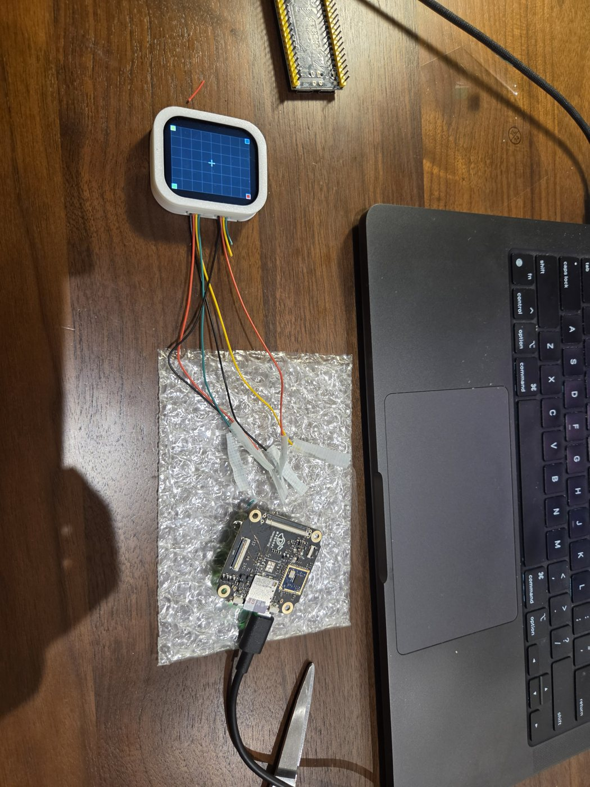
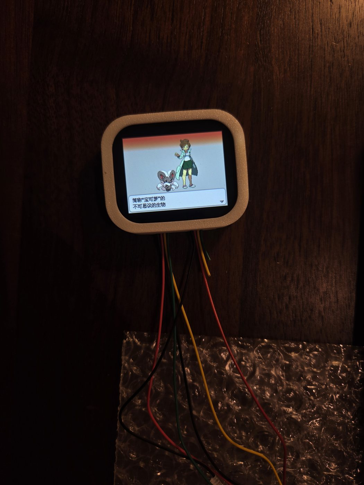

Proving the chip on a dev board
The whole design rests on one bet: a cheap, low-power dual-core chip with no GPU can run DS games well on two small SPI screens. Before ordering my own boards, I wanted proof on real hardware. So I bought a MangoPi MQ-Dual, a small dev board with the same Allwinner T113 chip.

Step 1: the software, with no screen at all
I built the system from mainline Linux rather than a vendor kit, plus a small display library of my own that converts each frame and pushes it out over SPI. The first benchmarks ran with nothing plugged in. The library still sends every frame down the SPI bus, so the numbers already include the real cost of driving a screen.
The board boots in 10–20 seconds and shows up on my Mac as a USB network device, so I can log in, copy games over and read logs without extra hardware.
Step 2: a mistake
I also tried a larger RGB screen so I could see the full DS picture. Its connector turned out to be wired in mirror image to the board's. Plugged in the obvious way, it shorted power to ground and a part on the board got hot. Lesson learned: check every new connector's pinout with a multimeter before plugging it in.
Step 3: the real screen
The board doesn't expose the second SPI bus in a convenient place, so I soldered thin enamelled wire to an empty flash-chip footprint on the board and ran it to the screen. About 20 cm of wire in total, which is a lot for a fast signal.
| SPI clock | What I saw |
|---|---|
| 30 MHz | Correct picture, but only about 37 fps reach the screen (27 ms per frame) |
| 60 MHz | Stable, no corruption, even on 20 cm of wire. About 56 fps shown |
| 75 MHz | 60.0 fps, 0 dropped frames, 11.2 ms to send a frame |
At 60 MHz the bus was fast enough on paper. The problem was the emulator: it sometimes waits 50 ms and then delivers several frames at once, and with only about 2 ms of slack the display thread had to drop some. At 75 MHz there's about 4.7 ms of slack, and the drops went to zero.

Step 4: a heavy game
For the stress case I used one of the heavier 3D DS games. My first numbers looked bad: 40–50 fps in towns and on the map. It turned out my own debugging tool, which streamed the screen to a web page, was eating about a third of the CPU. With it off, the game ran at a solid 60 in town and in the field, with the CPU at about 113% out of 200%.
What it decided
- The T113 is fast enough. 2D games, my main target, have plenty of headroom.
- 75 MHz is the safe default for the screens. A short test on my first own board later showed no corruption at 100 MHz either.
- The cheaper T113-S3, with 128 MB of memory, is enough, as long as the software is written for it.
- Everything from the display library to the boot setup carried straight over to my own boards a week later.